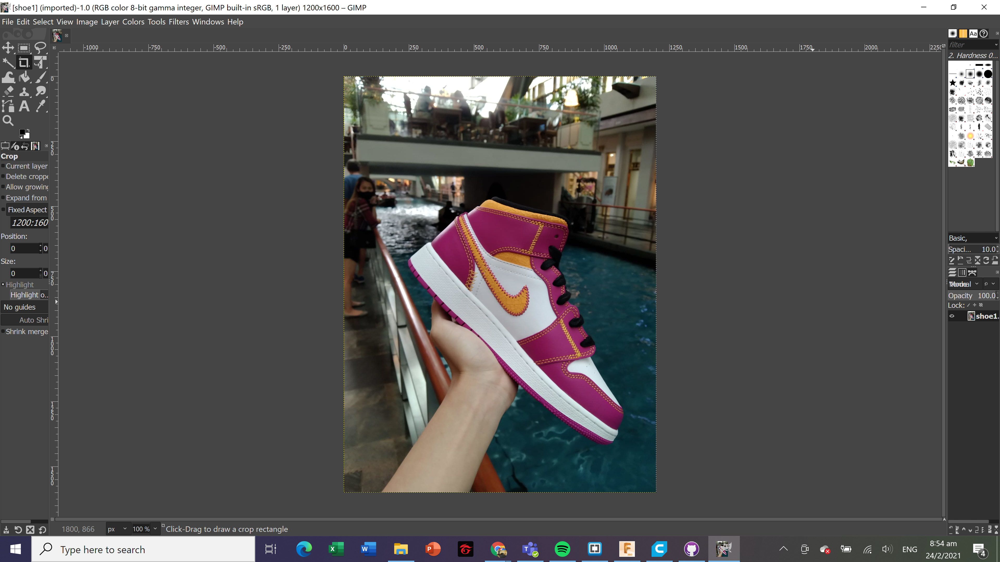
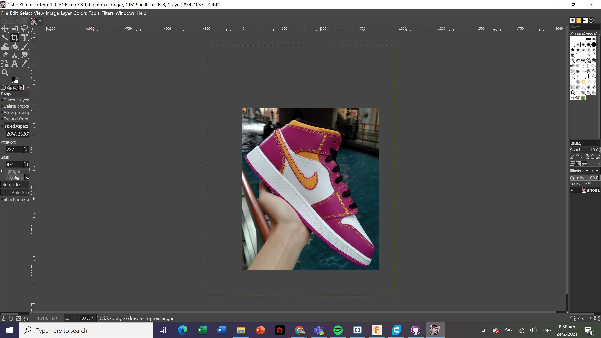
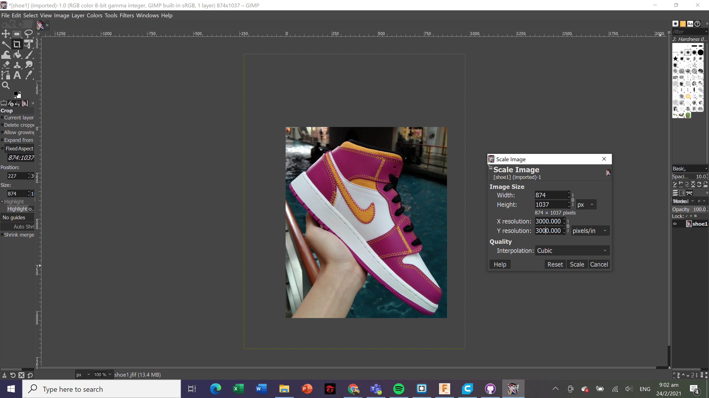
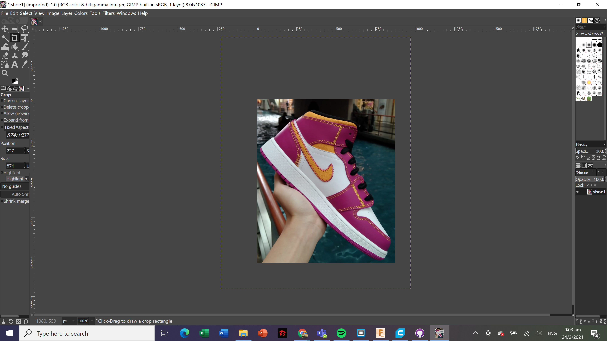
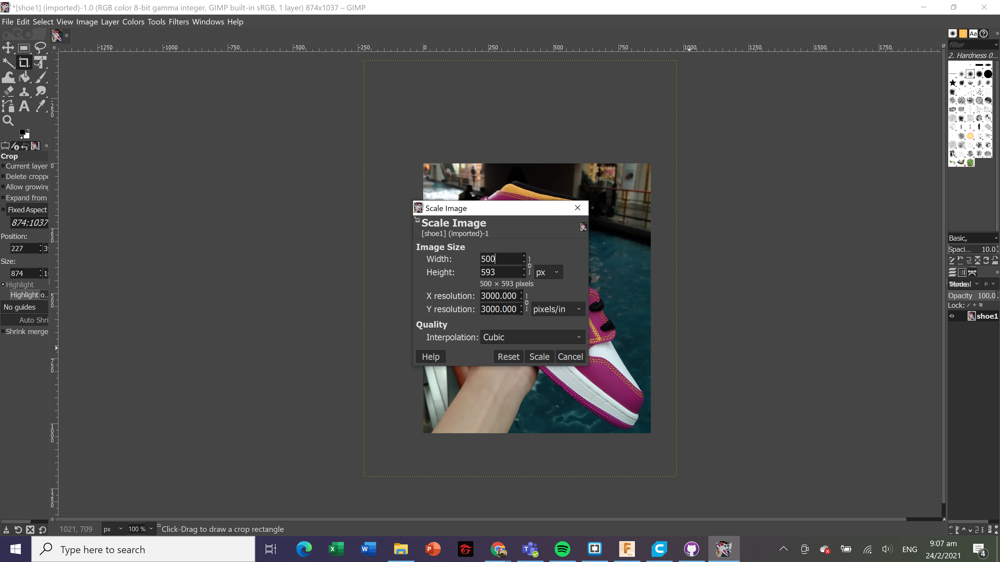
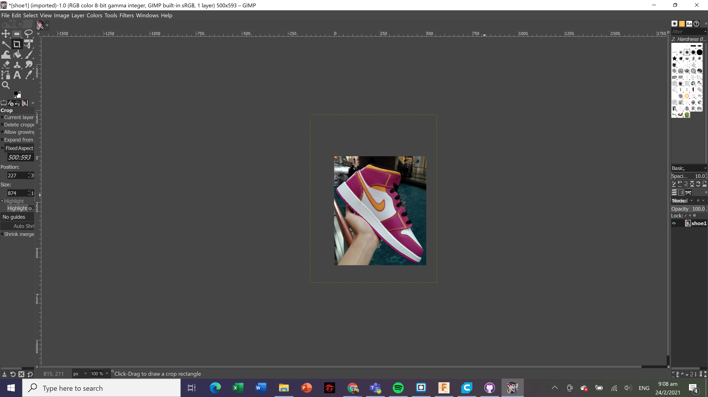
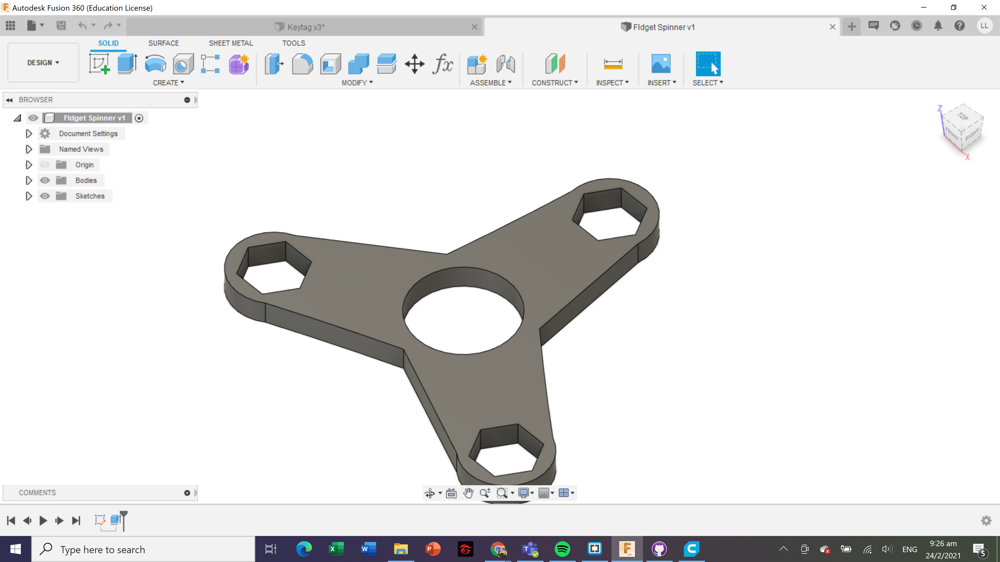
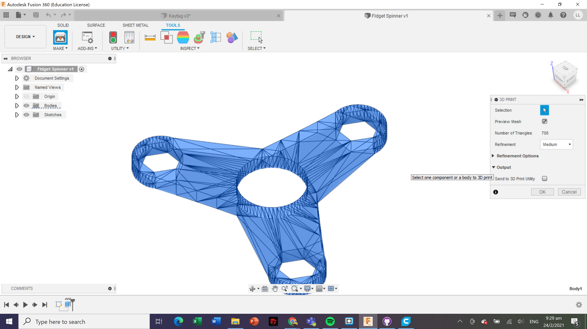
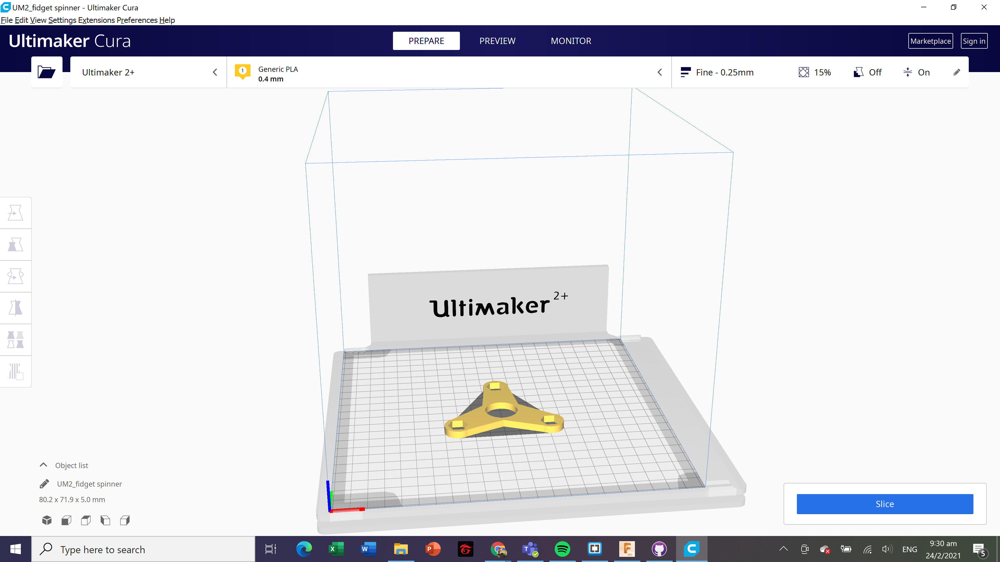

Computer Aided Design
2D raster
Raster images(also called bitmaps), are comprised of individual pixels of color. When viewed as a whole, the colored pixels make up a vivid and detailed painting. Raster images are capable of rendering complex, multi-coloured visuals, including soft color gradients. They are ideal for photo editing and creating digital paintings in programs such as Photoshop and GIMP , and they can be compressed for storage and web optimized images.
The quality of rastor images is defined by the resolution, expressed in pixels-per-inch (ppi), and the dimensions (pixel × pixel). The greater the ppi and dimensional measurements, the higher the quality. If I were to enlarge a rastor image, it will become more blurry as each pixel gets larger too. Quality of image is lost as we scale up rastor images. However, we can scale down rastor images to occupy less storage, such as web images.
Use of 2D rastor software
Gimp makes it easy for me to scale,crop and resize photos
Cropping:
After cropping the image, I am able to crop out the background and show only the shoe.
Resizing and Rescaling
After scaling the image, this is the end result.
Now in order to make the image smaller, I need to adjust the width and height of the image.
After resizing the image, this is the end result.
The main difference between vector and raster graphics is that raster graphics are composed of pixels, while vector graphics are composed of paths. A raster graphic, such as a gif or jpeg, is an array of pixels of various colors, which together form an image.
3D design
CAD or CADD (Computer Aided Design & Drafting) are a set of vector tools that allow you to create your design, simulate and analyse the results without actually building/fabricating the object. Once tested, you can then send the digital data for computer cutting or 3D printing. Fusion 360 is an Integrated CAD, CAM, and CAE software. You can consolidate your product development process. Unify design, engineering, electronics, and manufacturing into a single platform.
- Create a new sketch and select the XY-plane as the sketch plane. Under sketch, select Rectangle (2-Point) and draw a 50mm x 15mm keychain body.
- Select a Circle (Centre Diameter) and place the starting point at midpoint of the left side. The midpoint is indicated by a blue triangle + X when the mouse hover along the line.
- Draw 2 concentric circles, diameters of 8mm and 4mm at the midpoint.
- Select Trim and remove the unwanted line segments from the sketch.
- Select Fillet under Modify and click on a corner of rectangle. Set fillet radius as 3mm and click OK. Repeat for the other 3 corners.
- Click 'Finish Sketch' and select Extrusion under SOLID. Drag the arrow upwards and key in 2mm.
- Create a new sketch using the top face of keychain as sketch plane. Select Text and click on the sketch plane. I typed in my name and set the font preference, then drag the starting point to position the name. Click OK.
- Extrude the text by 2mm.
 Keytag Fusion 360
Keytag Fusion 360
I also created another project making a fidget spinner.
 Fidget spinner Fusion 360To send this component to 3D print,I will save this file as STL (Tools > Make > 3D Print), then I open it using Ultimaker Cura.
 